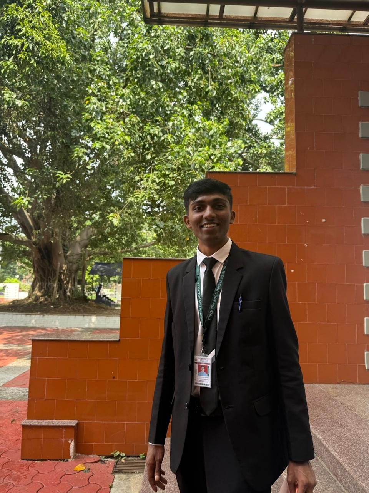
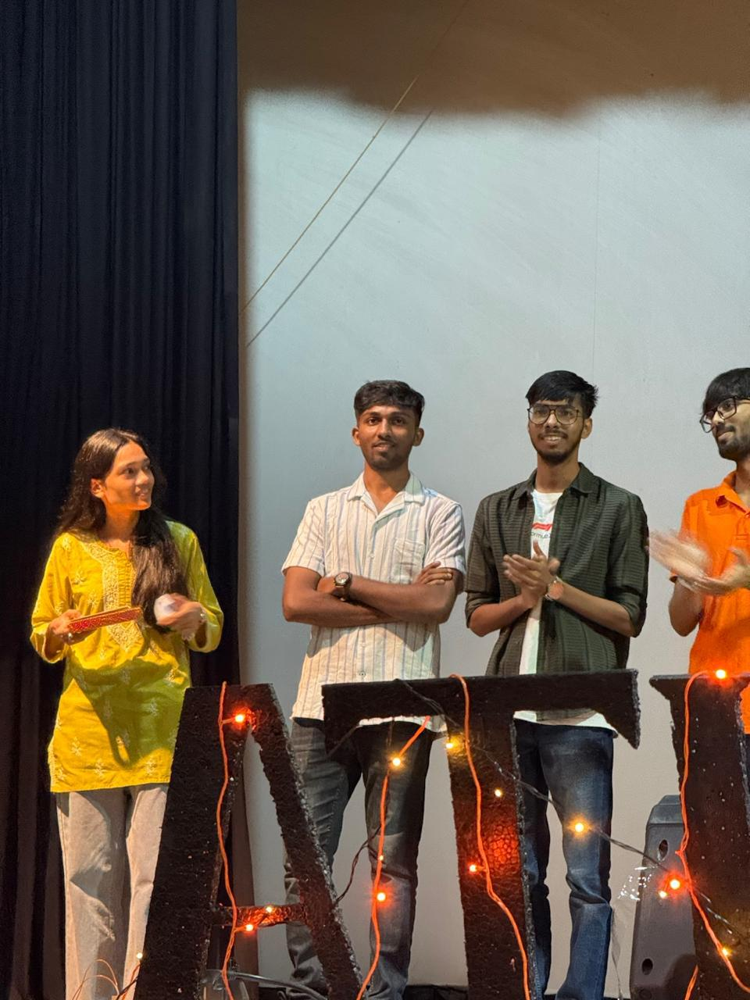
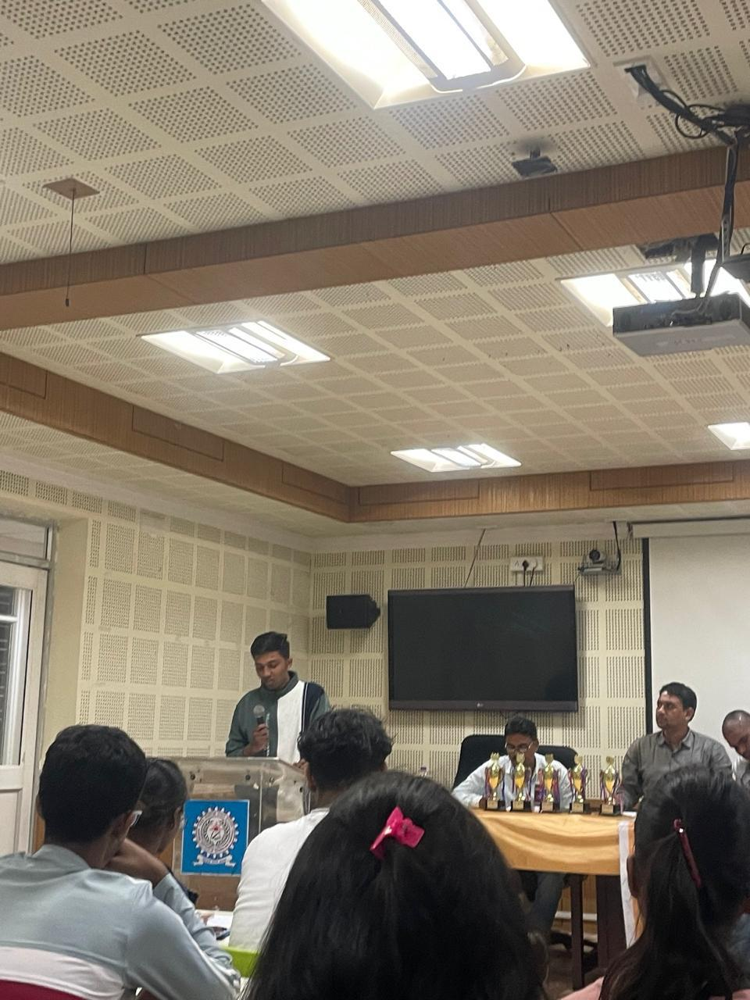
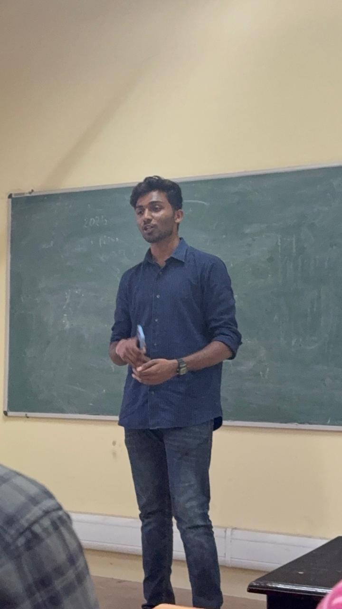
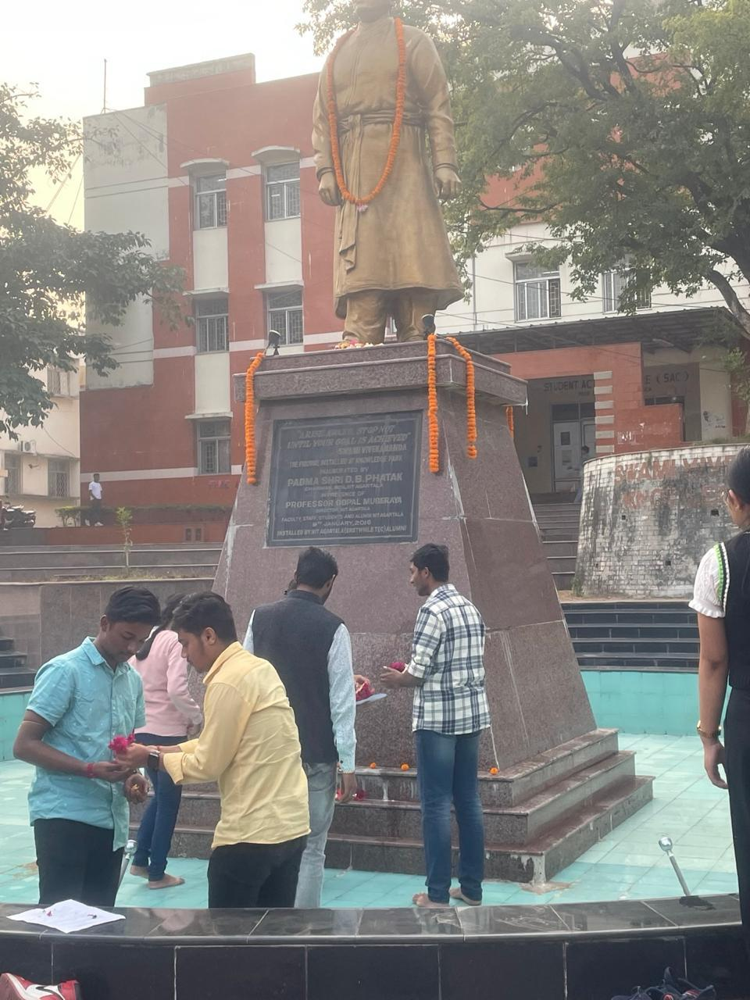

From Chaos to Success: An Engineering Student’s Unfiltered Journey (#17 Harshad Sangale, CSE batch of 2026)
I come from two contrasting worlds—engineering on my father’s side and medicine on my mother’s.
The Beginning: A Path Chosen by Default
I come from a background where my paternal and maternal side come from two contrasting worlds, with engineering on my paternal side and medicine on my maternal side.
Growing up, I could see two options in front of me, either becoming a doctor or an engineer, and though there was a possibility of business, it was never truly considered a reality. Of the two options before me, I was more inclined toward engineering.
Up until 10th, I knew I was good at maths and general studies, so I chose PCM and aimed for JEE. My parents motivated me to get into a good college and secure a placement and that was just the whole point. In my 11th standard, I found the school curriculum uninteresting, which led me to explore web development on my own. After scoring 97.4% in 12th, I was determined to pursue computer science.
I was born and brought up in Pune. I took admission in Allen Career Institute after 10th to advance in my JEE journey. The course was of two years and we had virtual classes, and I barely joined any classes, maybe three to four total. Once you get a series of backlogs, the class moves ahead of you, and it’s very hard catching up. My classes were always ahead of me.

First Impressions: Reality Check at NIT
I hadn’t put much thought before coming here. I came to college on November 3rd or 4th 2022 which was when the physical registration started. My result came in round one, and I kept hoping it would change in subsequent rounds. But it didn’t. Six, seven rounds yet nothing shifted.
After coming here, one question kept nudging me: have I come to the right place? The difference between colleges in Pune and government colleges in the North East was evident. When I went to the CSE department, it was a very eye-opening experience.
My physical registration started with drama. I had two caste certificates: one state and one center version. My caste certificate had inconsistent spelling issues. Because of this, I had to write an application stating that if the documents were ever found to be fabricated, I’d be removed from college. That threat lingered over me throughout my first year. Later, the same sir who registered me caught me connecting my phone to a lab computer. He said, “Tumko pata hai na, you know right, what you have signed? You better be careful.”

The Naïve Years: Learning Life the Hard Way
I was naive and immature in my first year. I think most of my development happened only after coming to college. In the beginning, I was childish and unwise, simply snowballing through my journey, living on the edge of a knife, always at risk of falling to either side or getting cut just by staying there. Still, I’m happy with how it went.
I didn’t go to classes much. In four years, it was only in the first year I attended classes regularly, and even then my attendance was 60-70%. I don’t remember any teachers who taught me or most of my classmates. In third year, I discovered some CSE students were actually my hostel friends and first-year classmates, and that information was new to me.
I never chose groups with the aim of my career being benefitted. Instead, I went where I felt comfortable and genuinely wanted. I don’t like making friends for profit. I understand why people do it, but it’s not my way of living.
My ego got thrashed numerous times during these years. Many times my friends, seniors probably humiliated or humbled me. Nobody around me knew, and I just took it to myself. Later, when you try to develop your mindset, you realize you can be more confident. That’s when I realized the person whose ego loses, wins.

Finding My Place: NLC and the Debate Scene
The first year was defined by two things: my hostel life and NLC. We went to fests starting with IIT Guwahati. Think about it. An eighteen year old person from Pune who never moved out suddenly goes 3000+ kilometers away and then travels everywhere. I went to UP, Bihar, Rajasthan, Uttar Pradesh. My parents don’t even know how much I traveled.
My advice: go to fests, especially IIT ones. You’ll have the best three days of college. Take your best friends and participate as much as possible.
The NLC meant a lot to me. I became the DebSoc lead and trained with seniors like Nancy Didi and Mouni Bhaiya. We went to Guwahati for the Asian Parliamentary debate, three new people who barely knew each other, practiced a couple times, then went to nationals. It was a great journey.

The Leadership Challenge: From Learner to Mentor
The transition to being DebSoc lead in second year was very drastic. While in the first year you’re just learning, and then in the second year, suddenly you’re in a position of authority with a set of juniors. You’re constantly surrounded by people better than you. Divyam was significantly better than me, and the gap grew larger when I dropped out of NLC.
But here’s what I learned: I’m not cut out for leadership positions. Till 10th, I was the school head boy, but I realized I had too much ego, selfishness, narcissism. I was self-centric, which isn’t leadership material. I can be an excellent, very reliable team member, but not the front-leading type.
Academic Disasters: The Art of Surviving Without Studying
Let me be honest about academics, I wasn’t into it at all. My friend Lakshay and I in CSE never crossed 20% cumulative attendance from second year onward. I missed labs, missed examinations. I told myself “I’ll handle it next week”. That’s how I lived.
I don’t want anyone to take the wrong inspiration, but this college is very lenient and unpredictable. Students can be penalized for 65-70% attendance, yet I had 9-12% in some subjects and was allowed to give exams.
My academic strategy was studying one night before exams. I knew the difference between starting one night versus one week before, so I tried starting early for previous semesters. I only achieved it once, in fourth semester, when my SGPA peaked at 8.24. Otherwise, I maintained around 7.5 CGPA.
But disaster struck in sixth semester. My CGPA was 7.45, and I wanted to cross 7.5 for placement eligibility. Instead, I got P grades in both lab and theory of the same subject, tanking my SGPA to 6.24.
Here is the whole story: I missed lab exams because my lab copy was blank. My Faculty Advisor was furious: “I’ve seen you since day one. You always take things lightly.” I even begged but eventually got signatures. The result: P grades that destroyed my CGPA.
After getting placed, I gave sweets to the same sir who gave me P grades. Both faculty members laughed: “Corporate life is different. You need discipline, structure.”
The Placement Miracle: How Everything Changed
For PhonePe placement, I knew from seniors they hired from NLC (which turned out to be false). When the drive announcement came, I contacted seniors immediately: “Tell me everything. I want to get placed here.”
My preparation focused on five areas: SQL, Excel, estimation problems, puzzles, and case studies. SQL I knew from CBSE 12th. Excel I practiced the day before. For others, I just understood concepts. Honestly, like everyone else, I took help. A third-year junior excellent at aptitude helped me practice questions from NIT Warangal’s PhonePe drive. Same questions appeared in our OA with just changed values, jackpot! Always have someone genuinely skilled for your OA since AI has limits.
The interviews had three rounds. The first was technical. SQL queries, then designing customer support architecture for PhonePe insurance. I divided the population into Tier 1-2 (comfortable with chatbots) and Tier 3 cities (needing manual support).
The second interview was HR-focused. When I mentioned WhatsApp bots, the interviewer got offended: “Why use other companies’ bots? Why not PhonePe’s own?”
In the third interview, only four called, all selected. I addressed the earlier conflict: “I think an integrated PhonePe bot with AI is good, but AI has limits. There should be a rollback button within 10 seconds to connect live agents. This combines efficiency with human support.”
Getting selected was incredible. I was crying and laughing simultaneously. Nobody (apart from my friends) expected it from someone not studious. Everyone was shocked, including me.

People Who Shaped Me: The Human Side of College
Throughout college, I’ve been a people’s person, adapting to any circle easily. Many people shaped me through observation of their behavior patterns.
Hostel life was crucial since I barely attended classes. You don’t live with parents as much as hostel mates. I personally believe boys make the most progress staying with other boys, everything gets challenged: ego, hunger, willpower, self-respect.
Two friends were particularly important: Sharmitha and Manasa. While hostel mates taught me about life, these two kept me connected with academics. They checked on me for four years, ensuring I participated in competitions. We were complete strangers before college, but sometimes people value you more than you value yourself.
I looked up to people like Rik for debating skills and Sadhvi Didi for compassionate strength. I learned from observing their excellence.
My Projects and Passion: Building Beyond the Classroom
My three main projects reflected my journey. Allen Digital Website was a frontend project from 11th class with good UI design. Car Price Prediction was my ML venture using Python. I recommend the Machine Learning A-Z Udemy course for anyone starting ML.
But Code-Off is my passion project, a 1v1 coding battle platform I’m developing. Players get LeetCode-style problems with 15 minutes to solve. The vision is making coding battles feel like UFC fights on live stream.
I’ve seen the best coders, they live only in their rooms for four years, no social life. You cannot compete with them. Once my laptop had an error buried deep in the OS compiler. This guy knew exactly where it was, opened the exact file, removed the exact line. I was stunned. Where is this talent being valued? That’s when I decided: let’s get them on live stream.

The Harsh Reality: Industry Changes and What’s Coming
The placement scenario has deteriorated significantly. When we joined, CSE average was 18.65 LPA. By third year, it dropped to 11 LPA. This year it’s going even lower. Only three SDE companies came in a month: Juspay (selected nobody), Tummee (selected nobody), BP (took five, the company preferred Tripura State residents).
Five years ago, web development was enough for good roles. Now everyone has the same ML projects. The current trend is quant engineering, IIT Delhi placements see packages of 1.2–3 CR for quantitative engineers who build profit-generating algorithms.
But openings are few, mostly for IIT graduates with exceptional math skills. For the rest of us, keeping up with trends is crucial. The only reliable constant is your smartness. Placements are largely luck-based, when your piece of luck comes, don’t let it slip.
What Needs to Change: A Vision for NIT Agartala
The main problem is bureaucratic administration. Middle-aged employees create unnecessarily rigid processes for young students. Simple verification tasks drag on for weeks through multiple approval layers.
Younger people should be hired. Drugs should be completely removed, they’re killing college momentum. We were ranked 51 with 24 LPA average in 2018, but stagnant administration has stopped growth.
The coding culture that existed with seniors like Chetan Saini, Govind Singh, Sinjini Didi and many others ended with our batch. They conducted DSA classes, mentored juniors. Our batch didn’t continue this despite having good coders across branches. COVID completely changed the college landscape. Good coders need to step up, restart the culture.
But I’ve noticed your third year is much more promising than ours. They’re attentive, active, and showing up for events. That’s great to see.
Living Without Hierarchy: Lessons Learned
Coming from COVID isolation, I never really saw seniors as “seniors” or juniors as “juniors.” I lived with PhD scholars, becoming friends with first-years rather than maintaining distance.
Now I realize this wasn’t entirely right. Juniors need to feel some hierarchy for system balance. Some got inappropriate confidence from this equality. There has to be that boundary.
Final Reflections: What I Want to Leave Behind
I’m just a cog in the wheel, I don’t want to be self-interested about being remembered. But if the three batches behind me remember me, I’ll be happy.
What I’d like to be remembered as: a person with 7 CGPA who didn’t attend classes but still had chances. I want to give hope, if this guy gets placed, others can too. I want to be an example that everyone, if blessed with a chance, should take it.
Enjoy your entire college journey. There’s nothing like it again. I was chained at home for 18 years; when I got freedom here, I took it fully. I don’t regret a single second. Even before placement results, I told myself: “If I get placed, I’ll enjoy every day and regret nothing. But if I don’t, I’ll regret every single day.” Results determine perspective.
The Ultimate Truth: You Decide Your Own Path
Everything comes down to who decides what’s right and wrong. Who decides if you’re wasting time? Who decides if you’re hanging out with the wrong people?
I hung out with “wrong” people since day one and still got placed. Who can now say those three years were wrong? Nobody. The power to decide what’s right or wrong lies with you.
My advice: do whatever you want. Don’t listen to others. Hang out with whoever you like. Excel in your area. Just avoid harmful things and work toward your goal. Don’t waste any day of your life.
If I could relive three years of college, I’d do everything I’ve done, but ten times more. I’d attend every event I skipped and wouldn’t attend any class I regret going to.
But also learn when opportunities arise. First- and second-year syllabus won’t be taught again anywhere else. Don’t keep backlogs. You might interact professionally with people who know these things.
In class, don’t sleep. Do something! Talk, disturb the class, write something, but don’t waste time sleeping. Make the most of every opportunity.
Because at the end of the day, this chaotic journey taught me that sometimes the most unconventional paths lead to meaningful destinations. The key is never giving up on yourself, even when everyone else might have. Your story is yours to write. Make it count.